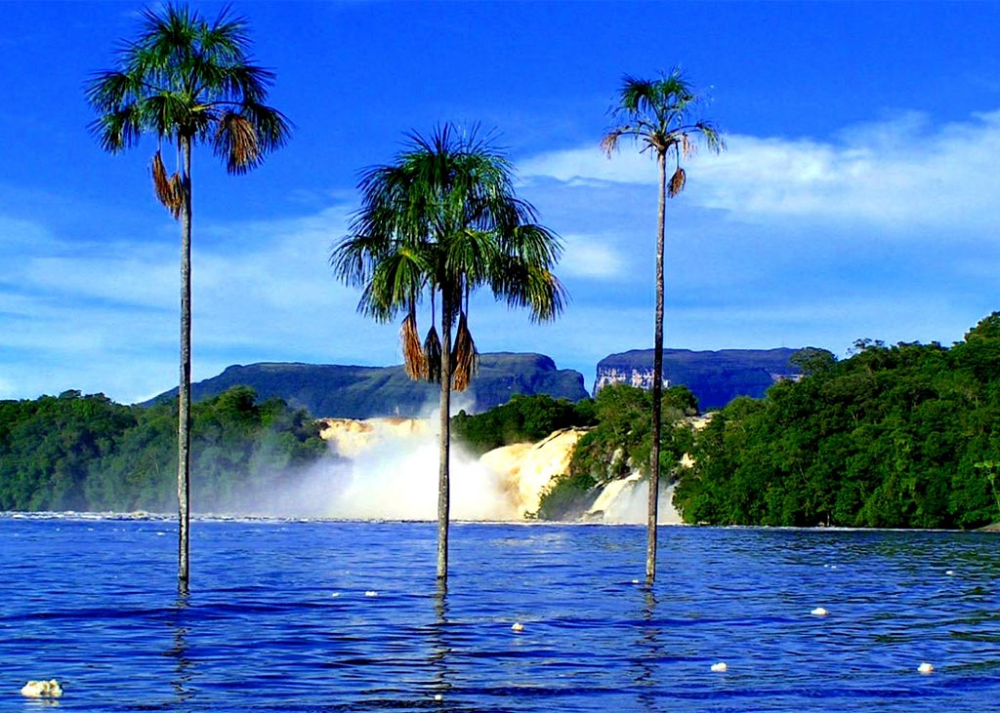
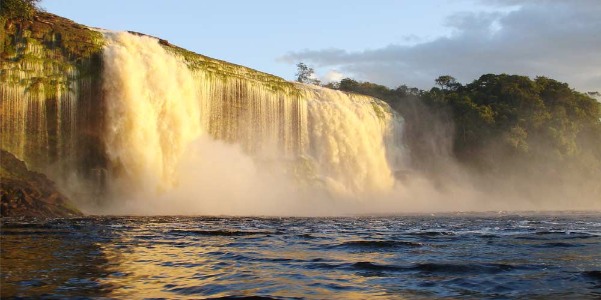
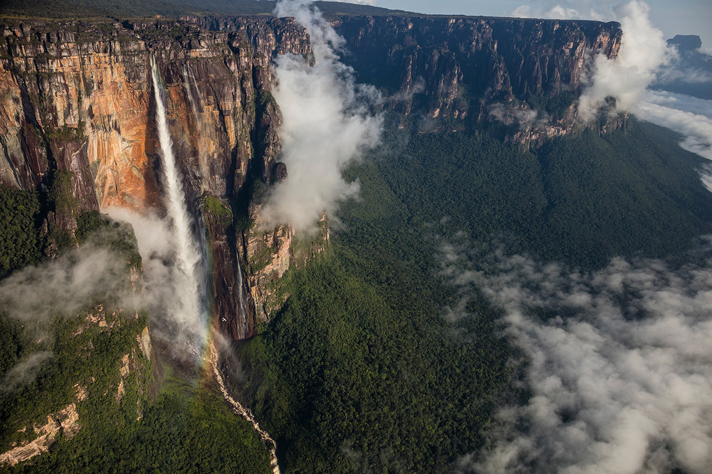

Водопад Анхель
Самый высокий в мире между прочим
Летом, когда в разгаре сезон дождей, самое время отправиться посмотреть очередное чудо света. Именно в сезон дождей водопад Анхель наиболее красив. Самый высокий в мире водопад находится на горе Ауянтепуи, в переводе гора Дьявола (вот так-то) , в глубине национального парка. К сожалению, подняться на вершину без альпинистского снаряжения невозможно, поэтому путешественникам предлагаются 4-х дневные туры к подножью горы, откуда они могут полюбоваться величием водопада и изучить окрестности. Добраться туда можно только на частном самолете или лодке и автор этого текста был там!
Прилетаем самолетом в национальный парк Канайма (тот самый, где находится уже знакомая нам гора Рорайма) Он огромен и изведан лишь частично. Дальше нас селят в мотельчики, и первый день обычно народ проводит на близлежащих водопадах, не таких огромных как Анхель, но не менее красивых.  
Ну а где же сам Анхель?
А до него еще добраться надо! Да, кстати, дорог к нему нет. Вообще. Только по реке или маленьким самолетом. Лететь дорого, а вот на моторке самое то. Плыть до него 4 часа. Обратно 5. Или наоборот, забыл куда течение идет. Плывешь по потрясающе красивым местам, чистейшая нетронутая природа. На середине пути обычно делается остановка на перекусить. Ну что, доплыли! Но это еще не все, надо около часа идти вверх по горе, чтобы достичь того места, куда низвергается вода, там и обзорная площадка. Общая высота водопада 979 метров, высота непрерывного свободного падения 807 метров. Высота падения настолько велика, что, прежде чем достичь земли, вода распыляется на мельчайшие частички и превращается в туман.

Год назад вышел римейк культового в 90-е фильма "На гребне волны". Какого было мое удивление, когда в одной из сцен фильма я увидел знакомые места!
наверх